Why we throw away a third of our food
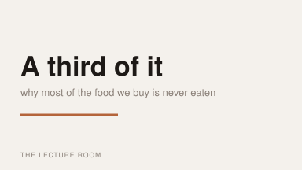
Right — thanks for having me. This is a talk about the food we buy and never eat, which sounds like a small subject and isn't. Roughly a third of it ends up in a bin somewhere between a field and a fork. I'm going to spend most of the hour on the last few feet of that journey, which is your kitchen, because that's the part any of us can actually do something about this week.
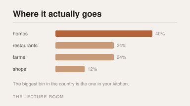
So here's where it goes, and the first time I saw this I had it completely the wrong way round. I assumed most of it was lost out at the farm, or thrown out by shops at closing time. Some of it is. But the biggest single share is thrown away by people at home, after they've already paid for it. That's the part that surprises everybody, including me, and it's the reason this isn't a talk about supermarkets.
And I want to be very clear that this is not a talk about you being careless. Nobody is careless. It's that the sensible-feeling decision — one big shop, buy a bit extra, better too much than too little — quietly produces a bin full of food, every week, for years.
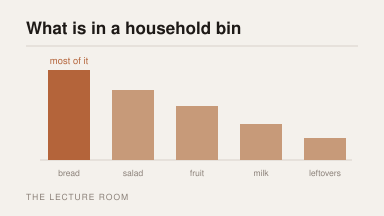
This is what's actually in it, roughly in order. Bread first, every time, by a distance. Then salad, then fruit, then milk, and leftovers a long way behind. And you'll notice none of those are expensive. That's part of why it stays invisible — you're not throwing away one thing you'd notice, you're throwing away eight things you wouldn't.
Bread is first for a very boring reason. It's the one thing we buy in a quantity nobody chose. A loaf is a loaf. If two of you eat four slices a day, a large loaf is already more days than it's going to last.
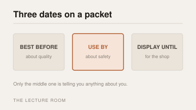
Right. The single most useful five minutes of this talk. There are three dates on a packet, they mean completely different things, and most of us treat all three as the same instruction.
Display until is for the person filling the shelf. It has nothing to do with you at all. Best before is about quality. Use by is about safety. Only one of those three is telling you something you have to obey.
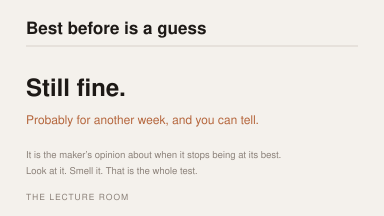
Best before is somebody's estimate of when the thing stops being at its best. Not when it becomes dangerous — when it stops being lovely. It's an opinion formed months earlier about a jar that has since sat in your cupboard in conditions nobody could have predicted. You're allowed to overrule it, and you already own the equipment: look at it, and smell it.
The place I'd push back hardest is dried food. Pasta, rice, tins, flour. Those dates are very nearly decorative, and an enormous amount of perfectly good food gets thrown out on the strength of them.
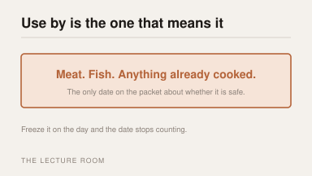
Use by is the one that means it. Meat, fish, anything already cooked, anything that's been opened. That date is about bacteria you can't see, can't smell and won't be able to judge by looking — which is exactly why somebody had to print a date on it for you.
But here's the bit nobody tells you: freezing stops the clock. If you get to the morning of the use-by date and you already know it isn't getting eaten, freeze it that day and the date stops counting. That one habit is worth more than everything else on this slide put together.
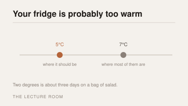
Then there's the thing sitting in your kitchen doing the actual work, which almost nobody has ever checked. A fridge wants to be about five degrees. Most of the ones anyone has measured are running at seven, because the dial says one to five and nobody has ever been told what those numbers are supposed to mean.
Two degrees doesn't sound like much. On a bag of salad it's about three days. On a pint of milk it's about two. You can have those back tonight for the price of turning a dial once.
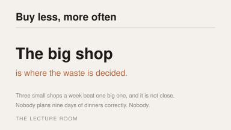
The other half of it isn't in the kitchen at all, it's in the shop. The big weekly shop is where most of the waste is actually decided, several days before it happens. You're standing in an aisle on a Saturday morning making a prediction about Thursday evening, and you have no idea what Thursday evening is going to be like.
Nobody is good at this. I'm not good at this and I'm the one giving the talk. Smaller and more often beats bigger and less often every time, and it takes no willpower at all — it just moves the decision to the day it's about.
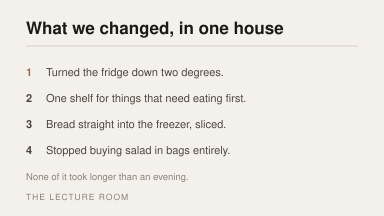
So — four things, in one house, over six weeks. We turned the fridge down. We cleared one shelf and put everything that needed eating on it, at eye level. Bread went straight into the freezer, sliced, so you take out what you want. And we stopped buying salad in bags, because we finally admitted we were throwing away three quarters of every one.
None of that is clever and none of it took longer than one evening. That's rather the point. Everything in this talk that worked was boring.
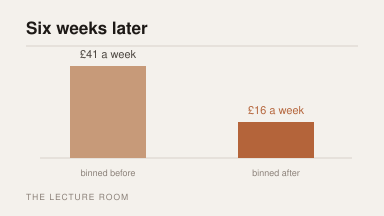
And that's the result. Forty-one pounds a week of food going in the bin, down to about sixteen. I want to be honest that this is one house and I was the one counting, so treat the number as a shape rather than a measurement. But the shape wasn't subtle. It wasn't five per cent.
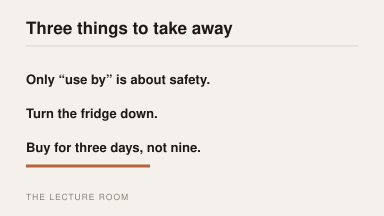
So. Only “use by” is about safety, and the freezer stops that clock. Turn the fridge down two degrees tonight, before you forget I said it. And buy for the next three days rather than the next nine, because you genuinely don't know what you're going to want on Thursday. That's what I've got. I think we've got a few minutes for questions.